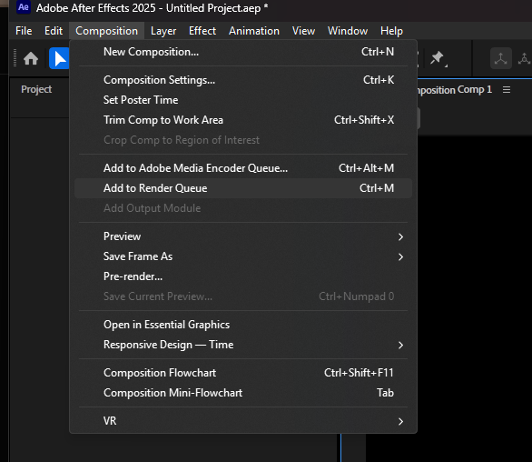
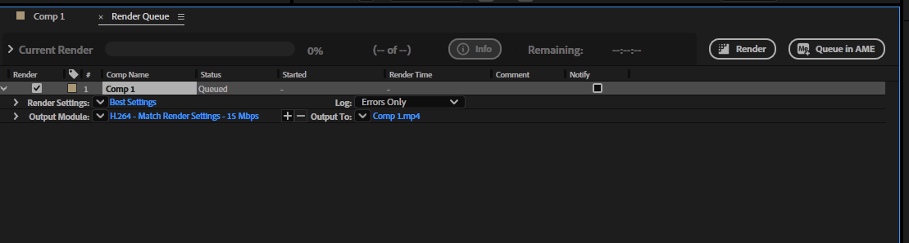
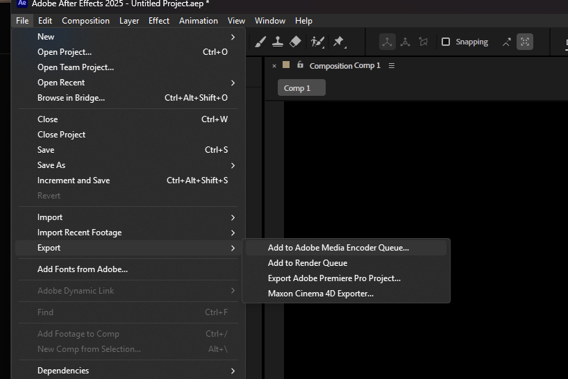

Рендер и экспорт из After Effects
Файл проекта .aep хранит устройство анимации, но не является готовым видео. Чтобы посмотреть работу вне After Effects или передать её дальше, нужно рассчитать кадры и записать результат в выбранном формате. Настройки зависят от назначения: просмотр, монтаж и графика с прозрачностью требуют разных файлов.
Сначала определяем, кому нужен файл
| Задача | Подходящий вариант | Что важно |
|---|---|---|
| Просмотр, презентация, отправка | H.264 в контейнере MP4 | Небольшой размер, читаемый текст, звук; без прозрачности |
| Дальнейший монтаж | QuickTime MOV с ProRes 422 / 422 HQ | Мастер с меньшим сжатием; размер обычно больше |
| Плашка или объект поверх другого видео | QuickTime MOV с ProRes 4444 и RGB + Alpha | Сохранить прозрачность и проверить края |
| Тяжёлая работа или покадровая обработка | Последовательность PNG или EXR | Каждый кадр отдельным файлом; звук передаётся отдельно |
Контейнер и кодек являются разными вещами. MOV или MP4 обозначают устройство файла, а H.264 и ProRes способ кодирования изображения. Простая смена расширения не конвертирует видео. Не каждый MOV содержит прозрачность: это определяется кодеком и настройками каналов.
Мастер сохраняют для дальнейшей работы, а копию для просмотра делают под площадку. Если понадобилась другая версия MP4, её можно получить из мастера, не пересчитывая всю композицию. Повторное сжатие уже сжатого ролика может ухудшать мелкие детали.
Рендер через очередь After Effects
Выделите финальную композицию. Команда Composition → Add to Render Queue или File → Export → Add to Render Queue добавляет её в очередь рендеринга. Названия и доступные пресеты могут отличаться между версиями.


- Render Settings. Проверьте качество Best, разрешение Full, частоту кадров и диапазон времени. Убедитесь, что выбран весь ролик или нужная рабочая область.
- Output Module. Выберите формат, кодек и каналы. Проверьте вывод звука, если он нужен.
- Output To. Укажите папку и понятное имя файла, например
lower_thirds_ivanov_v03_master.mov. - Нажмите Render и дождитесь завершения. Затем откройте полученный файл.
Низкое разрешение предпросмотра в окне композиции и разрешение финального рендера не одно и то же. Ориентируйтесь на настройки очереди. Перед длинным расчётом полезно вывести короткий сложный фрагмент: мелкий текст, градиент, движение и полупрозрачные края.
В современных версиях After Effects H.264 доступен непосредственно в Output Module. Совет «MP4 можно получить только через Media Encoder» относится к прежним версиям и больше не универсален. Для H.264 проверьте Format Options, битрейт и совпадение параметров с композицией. Если формата нет в вашей версии, используйте Media Encoder или конвертацию мастера.
Media Encoder: копии для просмотра
Команда File → Export → Add to Adobe Media Encoder Queue отправляет композицию в отдельную очередь. В Media Encoder задайте формат H.264, выберите подходящий пресет, откройте настройки и проверьте размер кадра, FPS, звук и путь. Запуск выполняется кнопкой Start Queue.

Предустановка является отправной точкой. Match Source помогает сохранить параметры источника, но итоговые значения всё равно нужно проверить. Например, вертикальная работа должна остаться вертикальной. Изменение FPS при экспорте не создаёт автоматически новые полноценные фазы движения.
Битрейт описывает количество данных за секунду, а не размер кадра. Низкий битрейт может разрушать градиенты, текст и быстрые детали. VBR распределяет данные с учётом сложности изображения. Для учебного ролика разумно начать с пресета под нужное разрешение, затем сравнить короткий экспорт с исходной композицией. Универсального числа для всех работ нет.
Если передача композиции между программами даёт сбой, можно сначала получить мастер через очередь AE, затем добавить готовый файл в Media Encoder. Это разделяет расчёт эффектов и сжатие. Полезно сохранять проект перед отправкой и проверять совместимость установленных версий программ.
Как сохранить прозрачность
Для Lower Thirds или логотипа поверх другого видео нужен альфа-канал. Прозрачность означает отсутствие непрозрачного фона, а не чёрную заливку. Включите шахматную сетку в окне композиции и убедитесь, что фоновые слои не закрывают нужные области.
- В Output Module выберите QuickTime, в Format Options Apple ProRes 4444.
- В Video Output установите Channels: RGB + Alpha.
- Для обычной передачи графики можно выбрать Color: Straight (Unmatted). Если получатель требует Premultiplied, согласуйте настройку и цвет подложки.
- Проверьте экспорт, наложив его на светлый и тёмный фон в программе монтажа.
RGB хранит цвет, а Alpha степень прозрачности. В обычном экспорте H.264/MP4 альфа-канал не сохраняется. Плеер может показать прозрачную область чёрной, поэтому отсутствие шахматной сетки в плеере ещё не доказывает потерю прозрачности.
Тёмная или светлая кайма у полупрозрачного края может означать несовпадение способа записи и интерпретации альфа-канала. Важно согласовать Straight / Premultiplied при экспорте и импорте, а не случайно менять настройки до исчезновения проблемы.
Проверяем результат, а не только статус Done
Откройте файл вне AE и посмотрите начало, конец и участки с быстрым движением. Сравните длительность, размер кадра, FPS, звук и цвет. Проверьте читаемость текста в реальном масштабе. Мастер и просмотрочная копия должны иметь понятные имена и разные назначения.
| Проблема | С чего начать проверку |
|---|---|
| Ролик обрезан | Диапазон времени в Render Settings и границы рабочей области |
| Нет звука | Наличие аудио, Audio Output / Export Audio, выбранный диапазон |
| Файл слишком большой | Не выведен ли монтажный мастер вместо копии H.264 |
| Мелкие детали распались | Битрейт, разрешение и число повторных перекодирований |
| Прозрачность пропала | Кодек, RGB + Alpha и непрозрачные слои фона |
| Цвет выглядит иначе | Управление цветом проекта, параметры вывода и приложение просмотра |
| Расчёт остановился | Сообщение об ошибке, свободное место и проблемный кадр; короткий тест участка |
Последовательность кадров удобна, когда работу нужно продолжать по частям: уже готовые изображения остаются отдельными файлами. При повторном расчёте следите за нумерацией и диапазоном, чтобы не получить пропуски. Для сборки последовательности нужен правильно заданный FPS и отдельная работа со звуком.
Вопрос для обсуждения: почему для отправки преподавателю и для передачи той же анимации монтажёру нужны разные версии? Сохранение мастер-файла позволяет выбирать способ доставки, не превращая каждый новый формат в повторную работу над проектом.
Официальные материалы: очередь рендеринга и экспорт, H.264 внутри AE, настройки Media Encoder.